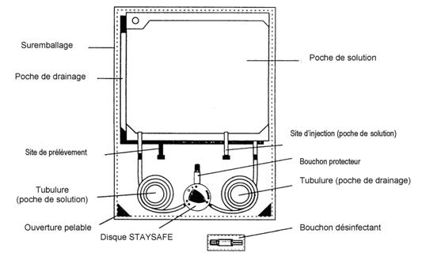
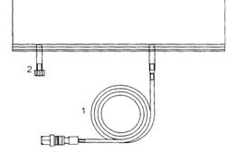

RÉSUMÉ DES CARACTÉRISTIQUES DU PRODUIT
ANSM - Mis à jour le : 28/01/2013
DIALYSE PERITONEALE CONTINUE AMBULATOIRE 17, solution pour dialyse péritonéale
2. COMPOSITION QUALITATIVE ET QUANTITATIVE
Un litre contient :
Chlorure de sodium ....................................................................................................................... 5,7860 g
Solution de S-lactate de sodium ..................................................................................................... 7,8500 g
Quantité correspondant à 3,9250 g de S-lactate de sodium
Chlorure de calcium dihydraté ........................................................................................................ 0,1838 g
Chlorure de magnésium hexahydraté .............................................................................................. 0,1017 g
Glucose monohydraté .................................................................................................................. 16,5000 g
Quantité correspondant à 15,000 g de glucose anhydre et jusqu'à 0,75 g/l de fructose.
|
Na+ |
: |
134 mmol/l |
|
|
Ca++ |
: |
1,25 mmol/l |
|
|
Mg++ |
: |
0,5 mmol/l |
|
|
Cl- |
: |
102,5 mmol/l |
|
|
S-lactate |
: |
35 mmol/l |
|
|
Glucose |
: |
83,2 mmol/l |
|
Pour la liste complète des excipients, voir rubrique 6.1.
Solution pour dialyse péritonéale.
Solution incolore à légèrement jaune.
Osmolarité théorique: 356 mOsm/l
pH ≃ 5,5
4.1. Indications thérapeutiques
Insuffisance rénale chronique au stade terminal (décompensé) quelle qu'en soit l'origine et pouvant être traitée par dialyse péritonéale.
4.2. Posologie et mode d'administration
Posologie
DIALYSE PERITONEALE CONTINUE AMBULATOIRE 17 est exclusivement indiqué pour un usage intrapéritonéal.
Le type de traitement, la fréquence d'administration et le temps de stase sont définis par le médecin traitant.
Dialyse Péritonéale Continue Ambulatoire (DPCA)
Sauf indication particulière, utiliser 2000 ml de solution par échange, 4 fois par jour (correspondant à une dose journalière de 8000 ml). Après un temps de stase de 2 à 10 heures, la solution est drainée.
Il est nécessaire d’adapter la posologie, le volume infusé ainsi que le nombre d’échanges pour chaque patient individuellement.
En cas de survenue de douleurs en raison d’une distension abdominale en début de traitement, le volume de traitement doit être temporairement diminué à 500-1500 ml.
Chez l'enfant, le volume de la solution doit être diminué en fonction de l’âge, du poids et de la masse corporelle (30-40 ml/kg).
Il n’existe pas de recommandations particulières pour les personnes âgées.
Chez les patients de taille importante et/ou pouvant tolérer des volumes plus importants, et si la fonction rénale résiduelle est perdue, une dose plus importante sera nécessaire (2500 ml-3000 ml).
Dialyse Péritonéale Automatisée (DPA)
Si une machine (cycleur sleep.safe) est utilisée pour une dialyse péritonéale cyclique continue ou intermittente, des poches de plus grand volume (5000 ml) sont utilisées.
Le cycleur réalise les échanges de solutions selon la prescription médicale enregistrée dans la machine sleep.safe.
La dialyse péritonéale est un traitement à long terme impliquant des administrations répétées de solutions.
DIALYSE PERITONEALE CONTINUE AMBULATOIRE 17 contient 15 g de glucose dans 1000 ml de solution. Selon la composition, une quantité de 30 g de glucose peuvent être apportés dans l’organisme par poche.
Mode et durée d'administration
Les patients doivent être formés de manière optimale, doivent pratiquer et maîtriser la technique de dialyse péritonéale avant de réaliser leur dialyse péritonéale à domicile.
Ils doivent recevoir une formation par du personnel qualifié.
Avant de réaliser leur dialyse à domicile, le médecin traitant s'assurera que les patients maîtrisent suffisamment la technique.
En cas de difficulté ou de doute, le médecin devra être contacté.
Répéter les infusions tous les jours.
Le traitement doit être poursuivi aussi longtemps qu'une thérapie de substitution rénale est nécessaire.
Dialyse Péritonéale Continue Ambulatoire (DPCA)
Réchauffer la solution à la température du corps. Pour les poches de volume inférieur à 3000 ml, utiliser un réchauffeur approprié. La durée de réchauffement pour une poche de 2000 ml, avec une température initiale de 22°C, est d'environ 120 minutes. Le contrôle de la température est réalisé automatiquement et est fixé à 39°C ± 1°C. Pour plus d'informations, se reporter à la notice d'utilisation du réchauffeur.
L'utilisation de micro-ondes n'est pas recommandée à cause des risques de surchauffe.
Introduire dans la cavité péritonéale le volume approprié à l'aide du cathéter, pendant une durée qui varie de 5 à 20 minutes.
Selon les instructions du médecin, la stase dure de 2 à 10 heures (temps d'équilibre) puis la solution est récupérée dans la poche de drainage.
Selon la pression osmotique souhaitée, Dialyse Péritonéale Continue Ambulatoire 17 peut être utilisé alternativement avec une solution de dialyse péritonéale de composition supérieure en glucose (osmolarité supérieure).
Dialyse Péritonéale Automatisée (DPA)
Les connecteurs des poches de solution sleep.safe sont insérés dans les ports disponibles de la machine sleep.safe et sont automatiquement connectés au Set sleep.safe par la machine. La machine vérifie le code-barre des poches de solution et déclenche une alarme si la poche n’est pas conforme à la prescription enregistrée dans la machine. Après ce contrôle, la tubulure du set peut être connectée à l'extension de cathéter du patient et le traitement peut commencer. La solution sleep.safe est chauffée automatiquement par la machine à la température du corps, pendant l'infusion. La durée des phases de stase et la sélection des concentrations en glucose sont réalisées selon la prescription enregistrée dans la machine (pour plus de détails, se référer aux instructions d'utilisation du cycleur sleep-face).
En fonction de la pression osmotique, DIALYSE PERITONEALE CONTINUE AMBULATOIRE 19 peut être utilisée séquentiellement avec d’autres solutions de dialyse péritonéale ayant une concentration moins élevée ou plus élevée en glucose (osmolarité supérieure ou inférieure).
De la solution elle-même
DIALYSE PERITONEALE CONTINUE AMBULATOIRE 17 ne doit pas être utilisé chez des patients présentant une acidose lactique, une hypokaliémie sévère, une hypocalcémie sévère, une hypovolémie et une hypotension artérielle.
En raison de la présence de fructose, ce médicament ne convient pas aux patients présentant une intolérance au fructose (intolérance héréditaire au fructose).
Une intolérance héréditaire au fructose non reconnue doit être exclue avant toute administration chez le nourrisson et l'enfant.
De la technique de dialyse péritonéale
Un traitement de dialyse péritonéale ne doit pas être mis en place en cas de :
· intervention chirurgicale abdominale récente, lésion abdominale récente, antécédents d'opérations abdominales avec adhérences fibreuses, brûlure abdominale sévère, perforation abdominale,
· conditions inflammatoires cutanées étendues au niveau de l'abdomen (dermatose),
· maladies inflammatoires de l'intestin (maladie de Crohn, colite ulcéreuse, diverticules),
· péritonite localisée,
· fistule abdominale interne ou externe,
· hernies ombilicales, inguinales ou autres hernies abdominales,
· tumeurs intra-abdominales,
· iléus,
· maladies pulmonaires (en particulier pneumonie),
· septicémie,
· hyperlipidémie sévère,
· rares cas d'urémie non traitables par dialyse péritonéale,
· cachexie et perte de poids importante, en particulier lorsqu'une nutrition à base de protéines - adéquate est impossible,
· cas où le patient est incapable physiquement ou mentalement de suivre le traitement de dialyse péritonéale selon la prescription du médecin.
Si une des situations mentionnées ci-dessus survient pendant la dialyse péritonéale, le médecin responsable décidera de la conduite à tenir pour la poursuite du traitement.
4.4. Mises en garde spéciales et précautions d'emploi
· perte d'électrolytes due à des vomissements et/ou diarrhées (l'utilisation temporaire d'une solution contenant du potassium doit être envisagée),
· hyperparathyroïdie: le traitement devrait être complété par l'administration de chélateurs du phosphore contenant du calcium et /ou de vitamine D pour assurer un apport en calcium entéral suffisant,
· hypocalcémie : il peut être nécessaire d’utiliser temporairement ou de façon permanente une solution de dialyse péritonéale avec une concentration plus importante de calcium lorsqu'une administration entérale de chélateurs du phosphore contenant du calcium et/ou de vitamine D n'est pas possible,
· traitement concomitant aux digitaliques: le taux de potassium dans le sang doit être particulièrement contrôlé. Une hypokaliémie sévère peut nécessiter l'utilisation d'une solution de dialyse contenant du potassium ainsi qu'un régime approprié.
Les solutions de dialyse péritonéale avec une concentration en glucose élevée (2,3 % ou 4,25 %) doivent être utilisées avec précaution afin de préserver la membrane péritonéale, de prévenir une déshydratation et de réduire l'apport en glucose.
Pendant le traitement de dialyse péritonéale, une perte de protéines, d'acides aminés et de vitamines (principalement les vitamines hydrosolubles) est inévitable.
Un régime approprié ou une supplémentation vitaminique et nutritive doit être effectuée pour palier ces carences.
Les caractéristiques de transfert de la membrane péritonéale peuvent se modifier lors de traitement à long terme; ces changements sont principalement mis en évidence par une perte de l'ultrafiltration. En cas de perte sévère d'ultrafiltration, la dialyse péritonéale doit être arrêtée et remplacée par un traitement d'hémodialyse.
Il est conseillé de surveiller régulièrement les paramètres suivants :
· poids du patient, pour prévenir une éventuelle hyperhydratation ou une déshydratation,
· concentration sérique en sodium, potassium, calcium, magnésium, phosphate, équilibre acido-basique et protéines sériques,
· taux de créatinine et d'urée dans le sang,
· taux de sucre dans le sang,
· parathormone et autres indicateurs du métabolisme osseux,
· fonction rénale résiduelle pour adapter le traitement de dialyse péritonéale.
Patients âgées : l’augmentation de l’incidence des hernies doit être prise en compte chez les patients âgés avant la mise en place d’une dialyse péritonéale.
Il est important de surveiller l'opacité du liquide drainé, la diminution de volume de liquide drainé et les douleurs abdominales qui peuvent être des indicateurs de péritonite.
Ajout d'un médicament dans la solution de dialyse péritonéale
L'ajout d'un médicament dans la solution de dialyse péritonéale n'est en général pas recommandé à cause des risques de contamination et d'incompatibilité entre la solution de dialyse péritonéale et le médicament.
Cela doit être réalisé dans des conditions aseptiques.
Après avoir mélangé et vérifié l'absence de trouble, la solution de dialyse péritonéale doit être utilisée immédiatement (ne pas stocker la solution).
Instructions concernant la manipulation (voir aussi rubrique 6.6)
Les poches peuvent parfois être endommagées durant le transport ou le stockage. Cela peut entraîner une contamination microbienne dans la solution de dialyse. Il est donc nécessaire de mirer soigneusement chaque poche de solution avant de réaliser la connexion de la poche et avant d'utiliser la solution de dialyse.
N'importe quel dommage, même mineur, au niveau du connecteur, des soudures ou des angles, doit être détecté en raison du risque de contamination.
Les poches endommagées ou contenant une solution trouble ne doivent pas être utilisées.
La solution de dialyse péritonéale ne doit être utilisée que si la poche et les soudures sont intègres.
Des mesures aseptiques doivent être prises pendant le changement de poche, afin de réduire le risque d'infection.
La solution de dialyse péritonéale ne doit pas être utilisée par voie intraveineuse.
4.5. Interactions avec d'autres médicaments et autres formes d'interactions
Une diminution du taux de potassium sérique peut augmenter la fréquence des effets indésirables liés aux digitaliques. Le taux de potassium doit être particulièrement surveillé en cas de traitement par digitaliques associé.
Une attention particulière ainsi qu'un contrôle sont nécessaires en cas d'hyperparathyroïdie. Le traitement doit comporter l'administration de chélateurs du phosphore contenant du calcium et /ou de vitamine D pour assurer un apport entéral suffisant en calcium.
La prise simultanée de diurétiques peut aider à maintenir la fonction rénale résiduelle, mais peut également provoquer un déséquilibre hydrique et électrolytique.
Chez les diabétiques, la dose journalière d'insuline ou d’antidiabétiques oraux doit être adaptée en tenant compte de l'apport augmenté en glucose.
Aucune étude avec DIALYSE PERITONEALE CONTINUE AMBULATOIRE 17 n'a été réalisée chez la femme enceinte ou allaitant.
Aucune étude de toxicité sur la reproduction animale n'a été réalisée.
DIALYSE PERITONEALE CONTINUE AMBULATOIRE 17 doit être uniquement administré après évaluation des bénéfices et des risques pour la mère et le fœtus/enfant.
4.7. Effets sur l'aptitude à conduire des véhicules et à utiliser des machines
Aucune diminution de l'aptitude à conduire des véhicules ou à utiliser des machines n’a été constatée suite à l’utilisation de ces poches conformément à la prescription.
Des effets indésirables peuvent survenir et être dus soit au procédé de dialyse péritonéale lui-même ou peuvent être induits par la solution de dialyse.
L’évaluation des effets indésirables se base sur les fréquences suivantes :
· très fréquent : ≥ 1/10
· fréquent : ≥ 1/100 à < 1/10
· peu fréquent : ≥ 1/1 000 à < 1/100
· rare : ≥ 1/10 000 à < 1/1 000
· très rare : < 1/10 000
· fréquence inconnue : ne peut pas être estimée à partir des données disponibles.
Effets indésirables potentiels dus à la solution de dialyse
Troubles endocriniens
Fréquence inconnue : hyperparathyroïdisme secondaire avec anomalies potentielles du métabolisme osseux.
Troubles métaboliques et nutritionnels
Fréquents : élévation de la glycémie, hyperlipidémie ou détérioration d’une hyperlipidémie préexistante, augmentation du poids due à une prise continue de glucose à partir de la solution de dialyse.
Troubles cardiaques et vasculaires
Peu fréquents: hypotension, tachycardie, hypertension artérielle.
Troubles respiratoires, thoraciques et médiastinaux
Peu fréquent : dyspnée.
Troubles rénaux et urinaires
Très fréquents : déséquilibres électrolytiques (par exemple : hypokaliémie).
Peu fréquents : hypocalcémie.
Troubles généraux et anomalies au niveau du site d’administration
Peu fréquents : fatigue, œdèmes, déséquilibre de la balance hydrique due à une perte de poids (déshydratation) ou une prise de poids (hyperhydratation) rapide. Déshydratation sévère pouvant survenir lors de l’utilisation de solutions plus concentrées en glucose.
Effets indésirables potentiels dus à la technique de dialyse
Infections et infestations
Très fréquents : péritonites mises en évidence par une solution de drainage trouble. Des douleurs abdominales, de la fièvre et des malaises peuvent apparaître ou, dans de rares cas, une infection généralisée du sang (septicémie). Le patient doit immédiatement consulter pour avis.
La poche contenant la solution trouble doit être fermée avec un bouchon stérile et envoyée pour évaluation de la contamination microbiologique et numération des globules blancs.
· infection du site d'émergence du cathéter ou du tunnel, révélée par une rougeur, un œdème, des suintements, des croûtes et une douleur au niveau du site d’émergence du cathéter.
En cas de signes d’infection au niveau du site d’émergence du cathéter ou du tunnel, consultez immédiatement votre médecin.
Troubles respiratoires, thoraciques et médiastinaux
Fréquence inconnue: dyspnée due à une surélévation du diaphragme.
Troubles gastro-intestinaux
Très fréquents : hernies.
Fréquents : distension abdominale et sensation de distension abdominale.
Peu fréquents : diarrhée, constipation.
Intoxication et intolérance
Fréquents : intolérance à la solution de dialyse lors de l’infusion et du drainage, douleurs scapulaires.
Aucun problème de surdosage n’a été rapporté.
Un excès de la solution introduite dans la cavité péritonéale peut être éliminé facilement vers la poche de drainage. Lorsque les échanges sont trop fréquents ou s'effectuent trop rapidement, une déshydratation et/ou des déséquilibres hydroélectrolytiques peuvent apparaître, nécessitant un traitement d'urgence immédiat. Si un ou plusieurs échanges ont été oubliés dans la journée, le temps de latence jusqu’à la mise en route de la séance suivante doit être réduit jusqu’à ce que la quantité journalière recommandée de dialysat (ex 4 x 2000 ml) soit atteinte.
Une hyperhydratation, une déshydratation et/ou des désordres hydroélectrolytiques peuvent apparaître.
La déshydratation est la conséquence majeure d’un surdosage suite au traitement par DIALYSE PERITONEALE CONTINUE AMBULATOIRE 17.
Un surdosage, l’interruption ou l'arrêt du traitement peuvent entraîner une hyperhydratation avec des œdèmes périphériques, une décompensation cardiaque et/ou des symptômes d’urémie qui peuvent mettre la vie du patient en danger.
Des soins d’urgence ainsi qu’une thérapie intensive doivent être mises en place. L’état du patient peut nécessiter un passage en hémodialyse.
5. PROPRIETES PHARMACOLOGIQUES
5.1. Propriétés pharmacodynamiques
Classe pharmacothérapeutique: SOLUTION POUR DIALYSE PERITONEALE, code ATC: B05DB
DIALYSE PERITONEALE CONTINUE AMBULATOIRE 17 est une solution contenant un tampon lactate et composée de glucose et d'électrolytes, indiquée dans le traitement des insuffisances rénales au stade terminal quelle qu'en soit l'origine par dialyse péritonéale continue ambulatoire (DPCA).
La concentration en calcium de cette solution de dialyse péritonéale est fixée à 1,25 mmol/l; ce qui permet de diminuer le risque d'hypercalcémie lors de traitement concomitants par des chélateurs du phosphore contenant du calcium et /ou de la vitamine D.
La caractéristique de la dialyse péritonéale continue ambulatoire (DPCA) est la présence plus ou moins continue de 2 litres de solution de dialyse dans la cavité péritonéale qui sont remplacés par une solution nouvelle 3 à 5 fois par jour.
Le principe de base de la dialyse péritonéale est l'utilisation du péritoine comme membrane semi-perméable permettant l'échange de solutés et d'eau entre le sang et la solution de dialyse par diffusion et convexion, selon leurs propriétés physico-chimiques.
La composition électrolytique de la solution est proche de la composition du sérum physiologique, bien qu'elle ait été adaptée (par exemple, concentration en potassium) pour l'utilisation chez des patients urémiques, pour permettre une substitution à la fonction rénale, grâce aux échanges entre le contenu intrapéritonéal et la solution.
Les substances qui sont normalement éliminées dans l'urine, telles que les déchets urémiques, la créatinine, le phosphate inorganique, l'acide urique, certains solutés et l'eau, sont éliminées de l'organisme grâce à leur passage dans la solution de dialyse.
Il faut tenir compte que les médicaments donnés conjointement peuvent aussi être éliminés pendant la dialyse. Le dosage doit donc être adapté.
Les paramètres individuels (tels que la taille du patient, son poids, les paramètres biologiques, la fonction rénale résiduelle, l'ultrafiltration) doivent être utilisés pour déterminer la dose et la combinaison adéquate de solutions en fonction de l'osmolarité (concentration en glucose) et des concentrations en potassium, sodium et calcium.
L'efficacité du traitement doit être suivie régulièrement sur la base de ces paramètres.
Les solutions de dialyse péritonéale avec une concentration en glucose élevée (2,3 % ou 4,25 %) sont utilisées lorsque le poids corporel est au dessus du poids sec désiré. La quantité de liquide retirée du patient augmente avec la concentration en glucose de la solution de dialyse péritonéale.
5.2. Propriétés pharmacocinétiques
Le glucose, utilisé comme agent osmotique dans la solution DIALYSE PERITONEALE CONTINUE AMBULATOIRE 17, est absorbé lentement, entraînant une diminution du gradient de diffusion entre la solution de dialyse et le milieu extracellulaire.
L'ultrafiltration est maximale au début de la stase et peut atteindre un pic au bout de 2 à 3 heures.
Une perte progressive de l'ultrafiltration peut apparaître par réabsorption. Après 4 heures l'ultrafiltrat avoisine 100 ml avec une solution glucosée à 1,5 %, 400 ml avec une solution glucosée à 2,3 % et 800 ml avec une solution glucosée à 4,25 %, 60 % à 80 % du glucose contenu dans le dialysat sont absorbés.
Le S-lactate de sodium utilisé comme tampon est pratiquement absorbé en totalité au bout de 6 heures de stase.
Chez des patients ayant une fonction hépatique normale, le S-lactate est rapidement métabolisé; ceci est mis en évidence par des valeurs normales de métabolites intermédiaires.
Le transfert de masse du calcium dépend de la concentration en glucose de la solution, du volume effluent, de la concentration sérique en ion calcium et de la concentration en calcium de la solution de dialyse. Le transfert de masse du calcium du patient vers le dialysat est d'autant plus important que la concentration en glucose de la solution, le volume effluent et la concentration sérique en ion calcium sont importants et que la concentration en calcium de la solution est basse.
On estime qu'un traitement journalier avec trois poches de solution à 1,5 % de glucose et une poche de solution à 4,25 % de glucose élimine jusqu'à 160 mg de calcium par jour, permettant un apport oral important de médicament à base de calcium et de vitamine D sans risque d'hypercalcémie.
5.3. Données de sécurité préclinique
Aucune étude de toxicité n'a été réalisée avec la solution de DIALYSE PERITONEALE CONTINUE AMBULATOIRE 17. Mais des études cliniques menées avec des solutions de dialyse péritonéale de composition similaire n'ont pas mis en évidence de risque de toxicité majeur.
Acide chlorhydrique 25 % (pour l'ajustement du pH).
Hydroxyde de sodium (pour l'ajustement du pH).
Eau pour préparations injectables.
En raison des risques d'incompatibilité et de contamination, les médicaments ne doivent être ajoutés dans la solution de dialyse péritonéale que sur prescription d'un médecin (voir rubrique 4.4 Ajout d'un médicament dans la solution de dialyse péritonéale).
2 ans.
Après première ouverture de la poche, la solution doit être utilisée immédiatement.
6.4. Précautions particulières de conservation
A conserver à une température ne dépassant pas 25°C.
Ne pas mettre au réfrigérateur, ne pas congeler.
6.5. Nature et contenu de l'emballage extérieur
Le système Stay.safe correspond à une double poche comprenant une poche non PVC (film constitué d'une feuille multicouches en polyoléfine) contenant la solution, un système de transfert en polyoléfine, un système de connexion en polypropylène (disque Stay.safe), une poche de drainage et un suremballage constitué d'un film multicouches en polyoléfine.
Sleep.safe:
Le système Sleep.safe correspond à une simple poche comprenant une poche non PVC (film constitué d'une feuille multicouches en polyoléfine) contenant la solution, un système de transfert et de connexion de la poche en polyoléfine, et un site d'injection en polyoléfine/caoutchouc synthétique.
Conditionnement
Stay.safe:
6 poches de 1500 ml
4 poches de 2000 ml
4 poches de 2500 ml
4 poches de 3000 ml
Sleep.safe:
2 poches de 5000 ml
6.6. Précautions particulières d’élimination et de manipulation
Mode d'emploi du Système Stay.safe
1. Vérifier la poche de solution (étiquetage, date de péremption, la limpidité de la solution). Retirer le suremballage de la poche et l'emballage du bouchon désinfectant.
2. Se laver les mains avec une solution antiseptique.
3. Placer le disque Stay.safe sur l'organiseur (suspendre la poche par l'orifice supérieur sur la potence - Dérouler la tubulure de la poche - Placer le disque Stay.safe dans l'organiseur - Puis, placer la poche de drainage à la partie inférieure de la potence).
4. Placer l'extension de cathéter sur l'organiseur.
5. Se désinfecter les mains et retirer le bouchon protecteur du disque Stay.safe.
6. Connecter l'extension de cathéter à l'embout du disque connecteur.
7. Ouvrir le clamp de l'extension de cathéter, le disque Stay.safe est sur position ●. Le drainage automatique commence.
8. Mettre le disque Stay.safe en position «flush » ●● pendant 5 secondes environ: la solution de la poche d'infusion passe vers la poche de drainage.
9. Mettre le disque Stay.safe en position «infusion » ○◑● : la connexion avec la solution de dialyse est effectuée.
10. Mettre le disque Stay.safe en position « sécurité » ●●●●. L'extension de cathéter est fermée automatiquement par un obturateur.
11. Retirer l'extension de cathéter du disque Stay.safe et la fermer avec un nouveau bouchon désinfectant.
12. Fermer le disque Stay.safe à l'aide du capuchon protecteur (qui est placé dans l'orifice droit de l'organiseur)
13. Mirer la poche de dialysat; l'opération est terminée.

Mode d'emploi du système Sleep.safe (pour la mise en place du système Sleep.safe, se référer aux instructions d'utilisation de la machine):
1. Préparation de la solution:
· Vérifier la poche de solution (étiquetage, date de péremption, limpidité de la solution, intégrité de la poche et du suremballage).
· Poser la poche sur une surface rigide.
· Retirer le suremballage de la poche.
· Se laver les mains avec une solution antiseptique.
· Vérifier la limpidité de la solution et l'absence de fuite.
2. Dérouler la tubulure (1) de la poche.
3. Retirer le bouchon de protection.
4. Insérer le connecteur dans l'un des ports disponibles du tiroir de sleep.safe.
5. La poche est alors prête à l'emploi avec le set sleep.safe.

1. Tubulure
2. Sites d'injection/prélèvement
En cas d'ajout de médicaments dans la solution pour dialyse péritonéale, réaliser le mélange dans des conditions aseptiques. Bien mélanger. Après avoir vérifié l'absence de trouble qui pourrait apparaître à cause d'incompatibilités, la solution pour dialyse péritonéale doit être utilisée immédiatement.
7. TITULAIRE DE L’AUTORISATION DE MISE SUR LE MARCHE
FRESENIUS MEDICAL CARE DEUTSCHLAND GMBH
ELSE-KRONER STRASSE 1
D-61346 BAD HOMBURG
ALLEMAGNE
8. NUMERO(S) D’AUTORISATION DE MISE SUR LE MARCHE
· 390 364-2 ou 34009 390 364 2 7: 1500 ml en poche (Polyoléfine). Boîte de 6.
· 353 758-0 ou 34009 353 758 0 3: 2000 ml en poche (Polyoléfine). Boîte de 4.
· 390 365-9 ou 34009 390 365 9 5: 2500 ml en poche (Polyoléfine). Boîte de 4.
· 390 366-5 ou 34009 390 366 5 6: 3000 ml en poche (Polyoléfine). Boîte de 4.
Sleep.safe:
· 390 367-1 ou 34009 390 367 1 7: 5000 ml en poche (Polyoléfine). Boîte de 2.
9. DATE DE PREMIERE AUTORISATION/DE RENOUVELLEMENT DE L’AUTORISATION
[à compléter par le titulaire]
10. DATE DE MISE A JOUR DU TEXTE
[à compléter par le titulaire]
Sans objet.
12. INSTRUCTIONS POUR LA PREPARATION DES RADIOPHARMACEUTIQUES
Sans objet.
Médicament non soumis à prescription médicale.